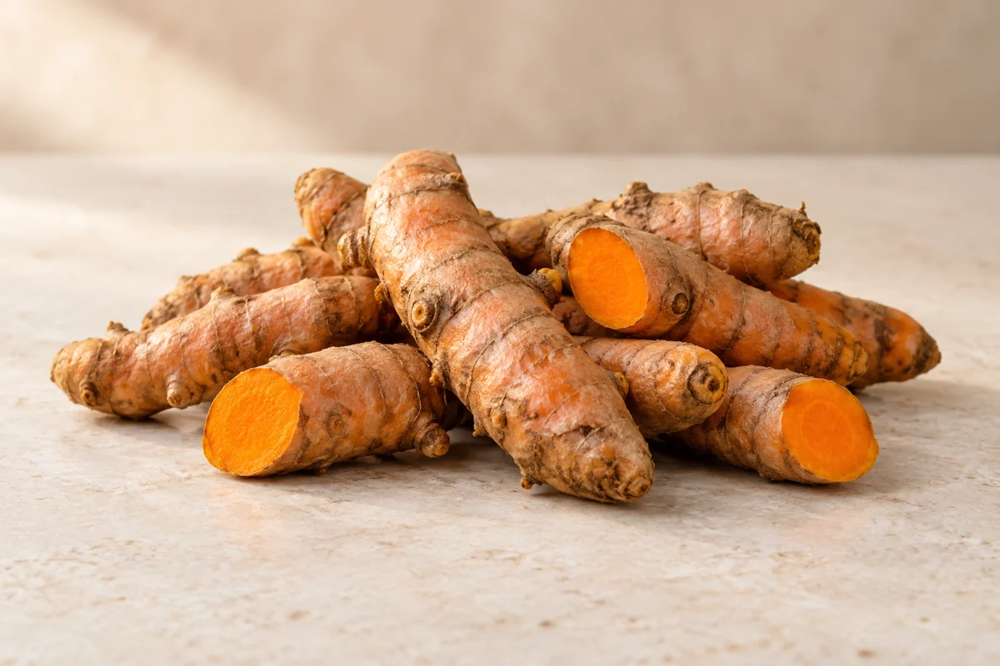

01 / TURMERIC

Curcuma longaKOMODITAS UNGGULAN
Kunyit
Rimpang berwarna kuning untuk bumbu, minuman, dan bahan baku industri. Bentuk serta kondisi produk dibahas sesuai kebutuhan pembeli.
- Kriteria kualitas
- Bentuk, kebersihan, kondisi rimpang*
- Pengemasan
- Disesuaikan dengan pesanan*